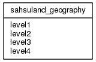

| Table: rif40.sahsuland_geography | |||
| SAHSU example database geo-level hierarchy table | |||
| Size: medium, Select frequency: medium, Update frequency: medium | |||
| Columns | |||
| Name | Type | Constraints | Description |
| level1 | VARCHAR (100) | Lowest level of resolution | |
| level2 | VARCHAR (100) | 2nd level of resolution | |
| level3 | VARCHAR (100) | 3rd level of resolution | |
| level4 | VARCHAR (100) | Highest level of resolution | |
| Indexes | |||
| Name | Columns | Description | |
| level4_idx4 | level4 | ||
| level1_idx1 | level1 | ||
| level2_idx2 | level2 | ||
| level3_idx3 | level3 | ||
| Grants | |||
| Role | Actions | ||
| rif40 | select, references, insert, delete, update | ||
| PUBLIC | select | ||
